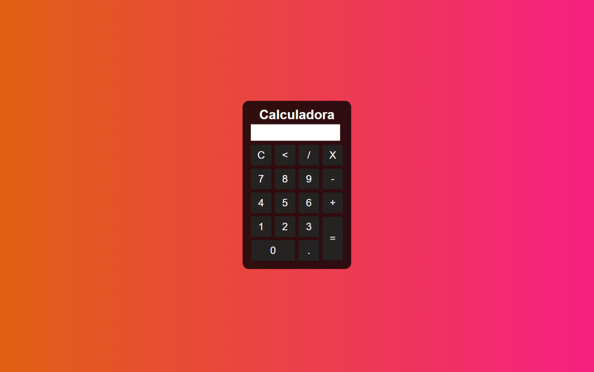

Linguagens e criação da interface
Significa HiperText Markup Language (Linguagem de Marcação de Hipertexto, em português). Isso porque o HTML não chega a ser uma linguagem de programação, mas sim de marcação. Ele é o componente básico da web e nos permite apenas inserir o conteúdo e marcar o que é cada coisa (para que o browser entenda e exiba depois), estabelecendo, assim, a estrutura básica de um website.
Para fazer um HTML é só criar um novo arquivo no seu computador com o nome que você quiser e a extensão .html — tenha certeza de que o nome do arquivo tem a extensão .html, pois é assim que ele será reconhecido pelo browser como HTML! — E, então, você deve abri-lo no seu ambiente de desenvolvimento e começar a escrever os códigos. (Também tem como criar pastas e arquivos pelo próprio ambiente, se preferir).
Bom, o arquivo HTML é, basicamente, uma série de tags (códigos que definem toda a estrutura da página) compostas por abertura e fechamento, como <tag> e </tag>. Há também tags de estrutura única, como a tag <br> que realiza um break ou quebra de linha.
Digamos que você queira escrever um parágrafo. Chamamos, então, a tag <p>, escrevemos o parágrafo e fechamos a tag com </p> 👇
<p>Eu sou um parágrafo.</p>Dessa forma, basta salvar o código no ambiente de desenvolvimento (Ctrl + S) e abrir o arquivo no seu navegador para ver o parágrafo escrito na tela. Você deve repetir esse processo sempre que fizer atualizações no código (inclusive em outros como CSS, JS, PHP, etc), mas em vez de reabrir o arquivo, apenas recarregue a página!
As regras ou jeitos de escrever em cada linguagem são chamadas de sintaxe (cada linguagem tem a sua).
Por exemplo, acabamos de ver algumas regrinhas do HTML: a abertura e fechamento de tags e o p para indicar parágrafo.
Cascading Style Sheets (ou Folha de Estilo em Cascatas) é uma "folha de estilo" composta por “camadas” utilizada para, literalmente, dar estilo (cores, fontes, bordas, tamanhos...) a uma página web que antes era só HTML, deixando-a mais atraente.
O CSS tem uma sintaxe simples: é só "chamar" o elemento HTML, abrir chaves ({) para limitar o bloco onde você irá escrever os estilos, chamar as propriedades de estilo que você quiser e depois seus respectivos valores (separando a propriedade do valor por dois pontos (:)), separar cada declaração de estilo com ponto e vírgula (;) e, finalmente, fechar chaves (}).
As propriedades de estilo são uma série de palavras em inglês que especificam algo, como: height (altura), width (largura), background-color (cor de fundo), color (cor — da fonte, apenas), font-family (uma lista de fontes que podem ser usadas), font-size (tamanho da fonte), border-radius (arredondamento da borda), e outras.
Há também diferentes jeitos de chamar cores, como: pelo nome (por exemplo: pink), pelo hexadecimal (#FFC0CB) ou usando o rgb (que significa quantidade de red, quantidade de green, quantidade de blue — (255, 192, 203)). Pesquise uma "tabela de cores css", é muito útil!
Bom, para usar o CSS você pode declarar a tag <style> no head do HTML e, então, aplicar todo o estilo desejado — este é o CSS interno — ou é possível, em vez de colocar a formatação dentro do arquivo HTML, criar um link para um arquivo CSS separado que contém os estilos — este é o CSS externo. O link você adiciona no lugar da tag <style> e o arquivo você cria com a extensão .css (salve-o na mesma pasta onde está o HTML — na verdade, faça isso com todos os arquivos externos e imagens usados no mesmo HTML) 👇
<link href="nome-do-arquivo.css" rel="stylesheet">Vamos fazer um exemplo chamando o parágrafo e aumentando o tamanho do texto, colocando um fundo preto, uma fonte branca e arredondando a borda 👇
p {
font-size: 30px;
color: white;
background-color: black;
border-radius: 20px;
}Além de chamar o elemento, você pode dar um nome específico para ele usando classe (que pode ser dada para mais de um elemento, assim, você formata vários de uma vez) ou id (que é um identificador exclusivo, para apenas um elemento). Assim, use . ou # para chamar a classe e o id, respectivamente, no CSS.
JavaScript é uma linguagem de programação que permite a você adicionar interatividade e comportamento dinâmico à elementos com HTML e CSS. Seu conteúdo também é gerado no navegador do cliente.
Toda vez que uma página web faz mais do que simplesmente mostrar a você informação estática, mostrando mapas interativos ou gráficos 2D/3D animados ou botões que realizam alguma função, você pode apostar que o JS provavelmente está envolvido.
Vamos a um exemplo: criaremos um simples bloco de texto com HTML (para dar estrutura) 👇
<p id="jogador">JOGADOR(A) 1: TOM</p>Adicionaremos um pouco de CSS 👇
#jogador {
font-family: sans-serif;
letter-spacing: 2px;
text-align: center;
border: 2px solid #454461;
border-radius: 10px;
padding: 3px 10px;
cursor: pointer;
}E finalmente, adicionaremos JavaScript 👇
// isto é um comentário em JavaScript
/* isto é um comentário longo
de múltiplas linhas
*/
/* comentários são ignorados pelo navegador
mas são muito úteis para dar instruções aos seus colegas desenvolvedores sobre como o código funciona
e para você mesmo(a), caso tenha que voltar ao código muito tempo depois e não se lembre do que fez
*/
var p = document.getElementById('jogador'); // aqui, estamos chamando o documento e pegando um elemento específico dele usando o id
p.addEventListener('click', atualizarNome); // o listener vai ficar de olho, esperando pelo evento click, para que uma função seja executada assim que ele acontecer
function atualizarNome() {
var nome = prompt('Insira um novo nome');
p.textContent = 'Jogador(a) 1: ' + nome;
}JOGADOR(A) 1: TOM
↑ Experimente clicar no botão acima para ver o que acontece! ↑
Bom, a linguagem JavaScript permite a você fazer coisas como:
• Armazenar conteúdo útil em variáveis (var). Elas são simplesmente espaços para você guardar algo. Por exemplo, nós pedimos que um novo nome fosse inserido e armazenamos o nome em uma variável chamada nome.
• Operações com pedaços de texto (conhecidos como "strings" em programação). No exemplo, nós pegamos a string "Jogador(a) 1: " e concatenamos (juntamos) com a variável nome para criar o texto completo "Jogador(a) 1: Tom".
• Executar o código em resposta a determinados eventos. Nós usamos o click no nosso exemplo para que quando clicassem no botão, rodasse o código que atualiza o texto.
• E muito mais!
O JS é inserido na página de maneira similar ao CSS. Enquanto o CSS usa o elemento <link> para aplicar folhas de estilo externas e o elemento <style> para aplicar folhas de estilo internas, o JavaScript só precisa do código <script> para ser aplicado internamente no HTML (adicione-o antes da tag de fechamento </body>). Assim 👇
<script>
// O JavaScript fica aqui
</script>E se quisermos colocar nosso JavaScript em um arquivo externo, é só criar um novo arquivo com a extensão .js e, no seu ambiente de desenvolvimento, adicionar o seu script. E, claro, para linkar esse script com o HTML, usamos a tag a seguir antes do fechamento do body 👇
<script type="text/javascript" src="nome-do-arquivo.js"></script>Ter esses arquivos externos é geralmente uma coisa boa em termos de organização de código, e faz com que seja possível reutilizar o código em múltiplos arquivos HTML. Além disso, o HTML fica mais legível sem grandes pedaços de script ou style no meio dele.
Faremos uma calculadora que funciona de verdade com HTML, CSS e JS internos 👇
<!-- isto é um comentário em HTML -->
<!DOCTYPE html> <!-- sempre declaramos que o documento é um HTML -->
<html lang="pt-br">
<head> <!-- significa cabeçalho; tudo o que está aqui dentro são tags automáticas que vêm quando iniciamos o HTML -->
<meta charset="UTF-8">
<meta http-equiv="X-UA-Compatible" content="IE=edge">
<meta name="viewport" content="width=device-width, initial-scale=1.0">
<title>Calculadora</title> <!-- é o título que vai aparecer na guia do navegador -->
<style> <!-- aqui começa o CSS -->
/* isto é um comentário em CSS */
* { /* * = tudo */
margin: 0;
padding: 0; /* a propriedade de estilo padding define a distância entre o conteúdo do elemento e suas bordas */
}
.fundo {
background-image: linear-gradient(to right, #dd6b01, #fa1693); /* linear-gradient cria degradês de duas ou mais cores */
height: 100vh;
color: #fff;
font-family: Arial, Helvetica, sans-serif;
text-align: center;
}
.calculadora {
position: absolute;
background-color: rgba(0, 0, 0, 0.8);
top: 50%;
left: 50%;
transform: translate(-50%,-50%); /* translate reposiciona um elemento na direção horizontal e/ou vertical */
border-radius: 15px;
padding: 15px;
}
.botao {
width: 50px;
height: 50px;
font-size: 25px;
cursor: pointer; /* cursor é quando o ponteiro do mouse está sobre o elemento e pointer faz aparecer a mãozinha ao invés da seta */
margin: 3px;
background-color: rgb(36, 36, 36);
border: none;
color: #fff;
}
.botao:hover { /* hover aplica um estilo diferente quando a seta do mouse está em cima do elemento */
background-color: black;
}
#resultado {
background-color: white;
width: 207px;
height: 30px;
margin: 5px;
font-size: 25px;
color: black;
text-align: right;
padding: 5px;
}
</style>
</head>
<body> <!-- significa corpo; aqui começa o conteúdo do site de fato -->
<div class="fundo"> <!-- div é uma divisão ou container de conteúdos para fins de estilo -->
<div class="calculadora">
<h1>Calculadora</h1> <!-- heading ou título principal, o mais importante -->
<p id="resultado"></p>
<table> <!-- tabela -->
<tr> <!-- table row ou linha da tabela -->
<td><button class="botao" onclick="clean()">C</button></td> <!-- td = table data ou célula da tabela -->
<td><button class="botao" onclick="back()"><</button></td> <!-- onclick serve para que aconteça uma ação quando o usuário clicar em algo -->
<td><button class="botao" onclick="insert('/')">/</button></td>
<td><button class="botao" onclick="insert('*')">X</button><td>
</tr>
<tr>
<td><button class="botao" onclick="insert('7')">7</button></td>
<td><button class="botao" onclick="insert('8')">8</button></td>
<td><button class="botao" onclick="insert('9')">9</button></td>
<td><button class="botao" onclick="insert('-')">-</button></td>
</tr>
<tr>
<td><button class="botao" onclick="insert('4')">4</button></td>
<td><button class="botao" onclick="insert('5')">5</button></td>
<td><button class="botao" onclick="insert('6')">6</button></td>
<td><button class="botao" onclick="insert('+')">+</button></td>
</tr>
<tr>
<td><button class="botao" onclick="insert('1')">1</button></td>
<td><button class="botao" onclick="insert('2')">2</button></td>
<td><button class="botao" onclick="insert('3')">3</button></td>
<td rowspan="2"><button class="botao" style="height: 106px;" onclick="calcular()">=</button></td> <!-- rowspan expande ou mescla duas ou mais linhas da célula -->
</tr>
<tr>
<td colspan="2"><button class="botao" style="width: 106px;" onclick="insert('0')">0</button></td> <!-- colspan expande ou mescla duas ou mais colunas da tabela -->
<td><button class="botao" onclick="insert('.')">.</button></td>
</tr>
</table>
</div>
</div>
<script> <!-- aqui começa o JavaScript -->
function insert(num) {
var numero = document.getElementById('resultado').innerHTML;
document.getElementById('resultado').innerHTML = numero + num;
}
function clean(){
document.getElementById('resultado').innerHTML = "";
}
function back() {
var resultado = document.getElementById('resultado').innerHTML;
document.getElementById('resultado').innerHTML = resultado.substring(0, resultado.length -1);
/* substring = só uma parte; no caso, desde o 0 que é o primeiro caractere
(pois a contagem começa no 0, 1, 2..), até o final do comprimento do
que está aparecendo, mas tirando 1
*/
}
function calcular() {
var resultado = document.getElementById('resultado').innerHTML;
document.getElementById('resultado').innerHTML = eval(resultado);
/* eval é uma função que já existe e já vem pronta, ela interpreta as
contas que estão no meio dos números e devolve o resultado
automaticamente
*/
}
</script>
</body>
</html>O resultado:
